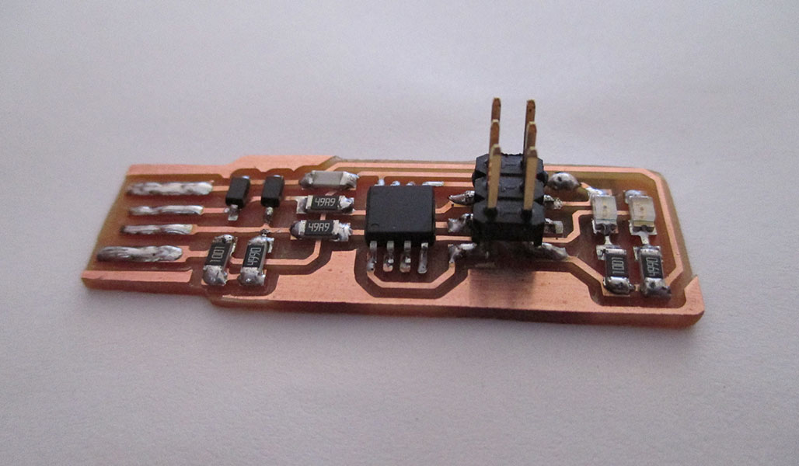
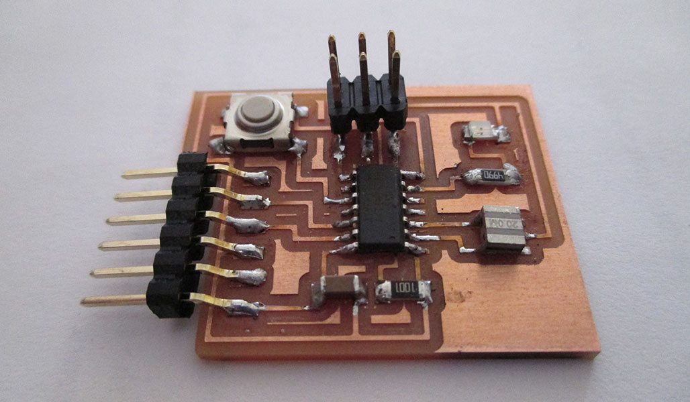
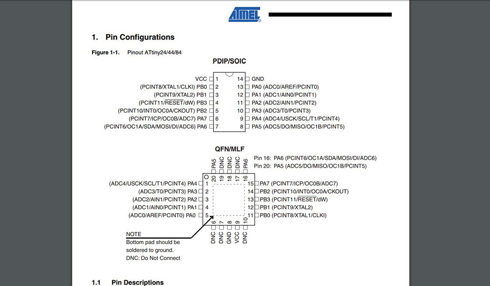
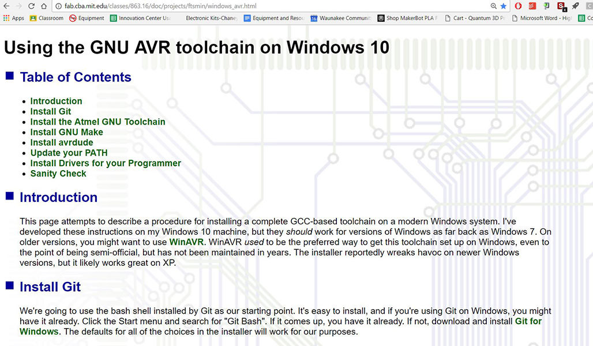
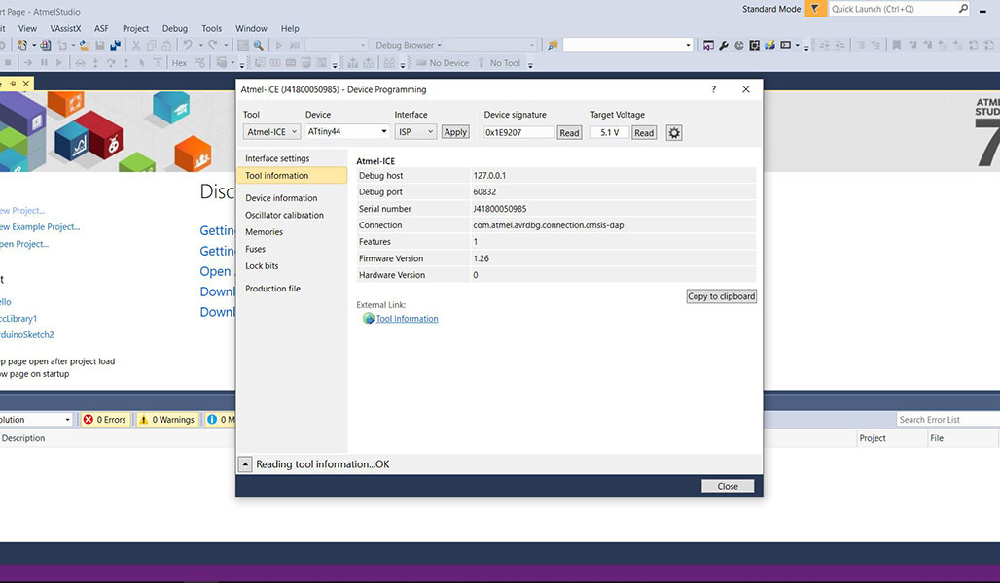
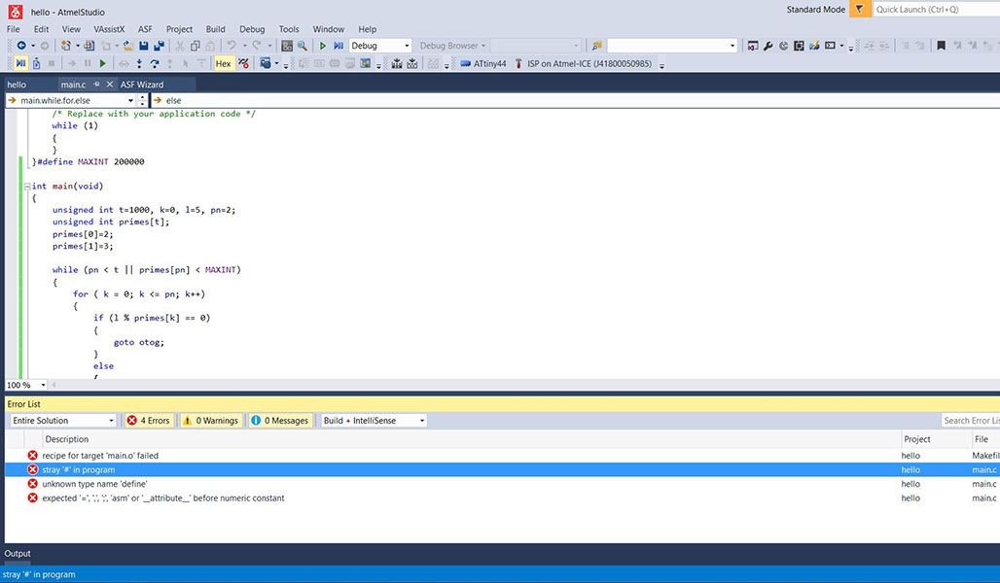
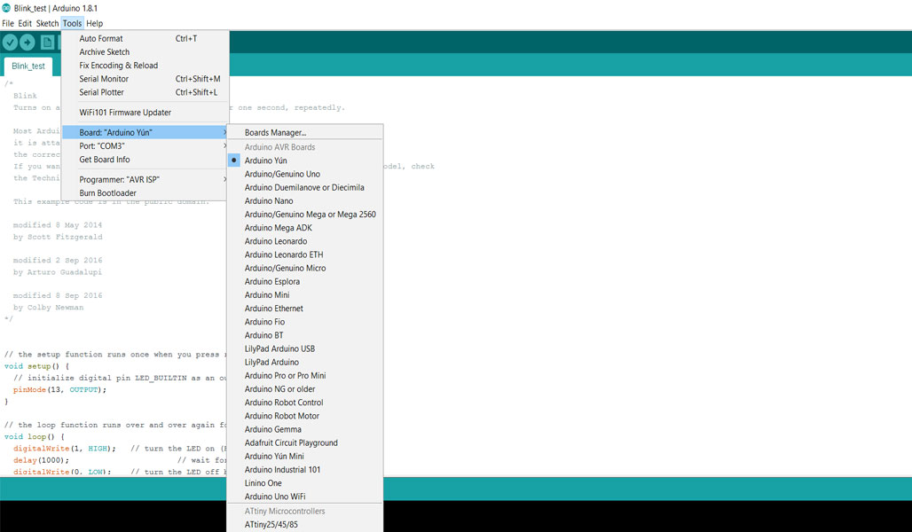
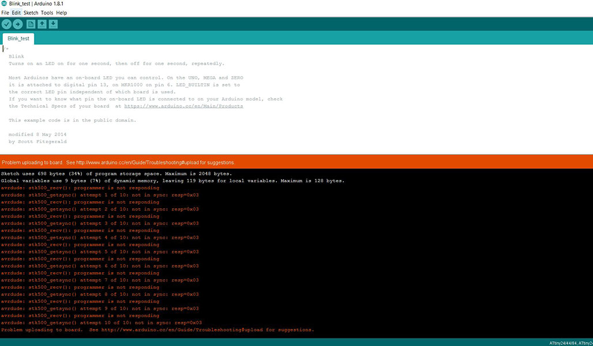

Assignment 8
Our week 8 assignment was to read our microcontrollor data sheet and program our HelloWorldBoard to do something. I have my board built and that is where the wheels fell off for this week. We are trying to get all of the software installed so that we can attempt to program the board. I must admit this is the week that I dreaded the most as I have no experience with programming. Here is where I stand....
I have the components all complete
Next we were to read over the data sheet for our micro controller - the attiny44. I downloaded the 238 page pdf as a reference. This was the first time I have taken a look at a document like this. It was very overwhelming at first but I think I am starting to get it figured out. I figured out that there are different sections and each one has reference and instructions for programming parts of the board.There is a ton of useful information in this document.
Following the tutorial linked to from the class page I started to download the software/apps needed to program the board. This is where the confusion started to set in. From what I gathered I can install the items listed in the tutorial and then load my micro controller. I am in a school and my IT staff likes to keep things pretty locked down. I was able to install the items but for some reason I cannot get them to show in GIT Bash. We are on spring break so I will talk to my IT guys as soon as I am able to after break.
After connecting with Blair this morning he suggested that I also talk to the IT people about getting a dedicated machine to run Ubunto in the lab as it seems to be "easier". I am going to also bring this up as it might free up time on both ends if I am able troubleshoot our lab issues better without always bringing them into the mix. I also did some research and it seems that both Arduino and Atmel Studio can load the programming onto the board. I am getting the feeling that I am missing a crucial step in the process as I can enter in the info on both software interfaces but have issues actually getting it to finish the loading process. Kayla and I are working this weekend on the homework so maybe two heads are better than one. Here are the screens from both software:

So I am obviously not 100% complete with the week 8 assignment but I am slowly plugging away on it. I will do some more research tonight and see what I can find. I have a feeling there are others out there in my situation so hopefully tomorrow's review will help out.
This is StoneWork, a free, fully standards-compliant CSS template designed by TEMPLATED. The photos in this template are from Fotogrph. This free template is released under the Creative Commons Attribution license, so you're pretty much free to do whatever you want with it (even use it commercially) provided you give us credit for it. Have fun :)